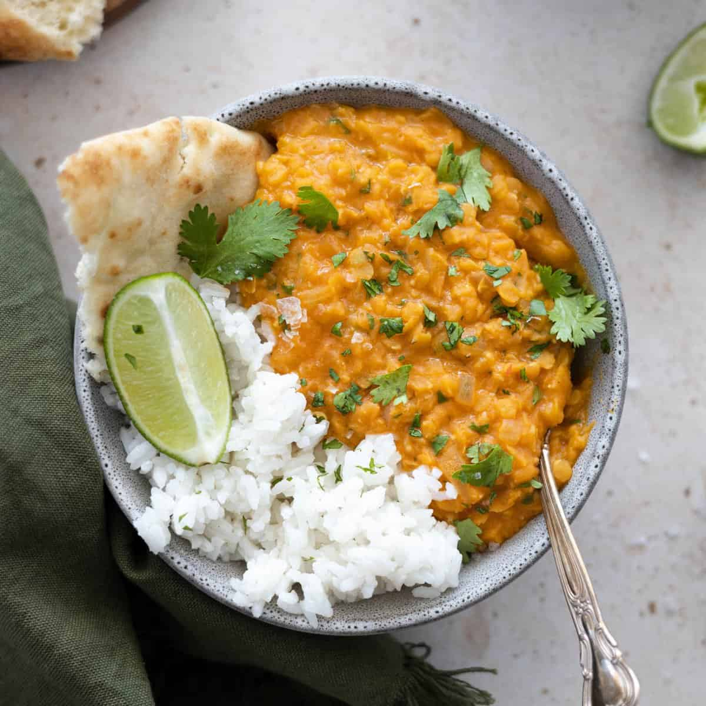

Dal

Description
Dal is a staple vegetarian lentil curry from India often served with flatbreads and rice.
It has many variations with different types of lentils, spices and other added ingredients
such as coconut milk or tomatoes as options. Dal, while being relatively easy to make, is a highly nutritious dish
packed with protein, fibre, and essential vitamins and minerals. This recipe is highly economical and should
make about 8 servings so share it with friends and family or keep it for leftovers. (which is perfect as most curries tend to become
even more flavourful over time!)
Ingredients
- 2 med onions - diced
- 5 med tomatoes - diced
- 3 tbsp ginger garlic paste
- 2 tbsp Neutral oil
- 2 cinnamon sticks
- 1 bay leaf
- 2 cups red split lentils - rinsed
- 1 can coconut milk
- 1 tbsp tomato paste
- 1 tbsp garam masala
- 2 tsp cumin seeds
- 1 tsp turmeric
- 2 tsp corriander powder
- 2 tsp cinnamon
- 2 tbsp clive of india curry powder
- 2 green cardamom pods
- 2 green chili
- 4 cups water
- 1 tbsp chicken stock powder
Steps
- First heat up the oil in a large pot and add in the cumin seeds, cinnamon stick, bay leaf, cardamom pods, and sliced green chilis
- After a minute or when the spices are fragrant add the diced onions and saute until translucent
- Add in the diced tomatoes, ginger garlic paste, tomato paste, and turmeric and let it cook until a paste forms
- Add the rest of the spice powders, the rinsed red lentils, water and chicken stock powder, and coconut milk and bring to a simmer
- Keep cooking for at least 10 minutes or until you reach your desired consitency. A longer cook time breaks down the lentils - resulting in a creamier end product
- Add salt to taste, optionally add some lemon or extra garam masala before serving with rice, yoghurt, naan or a side salad